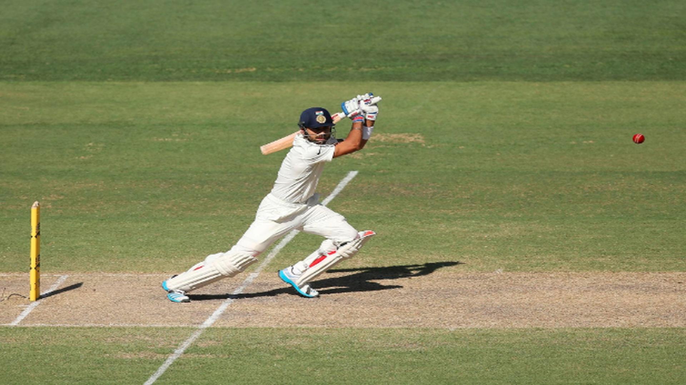
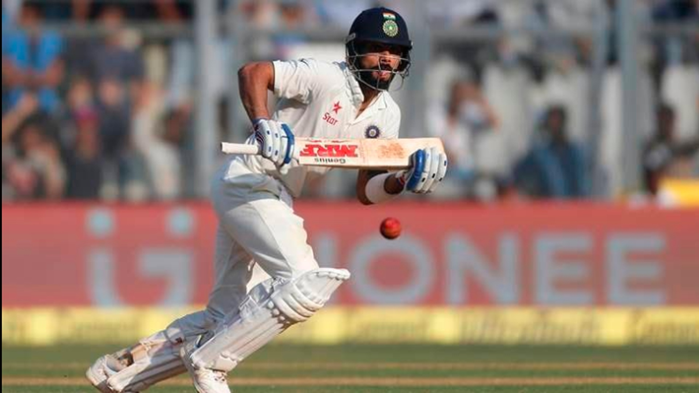
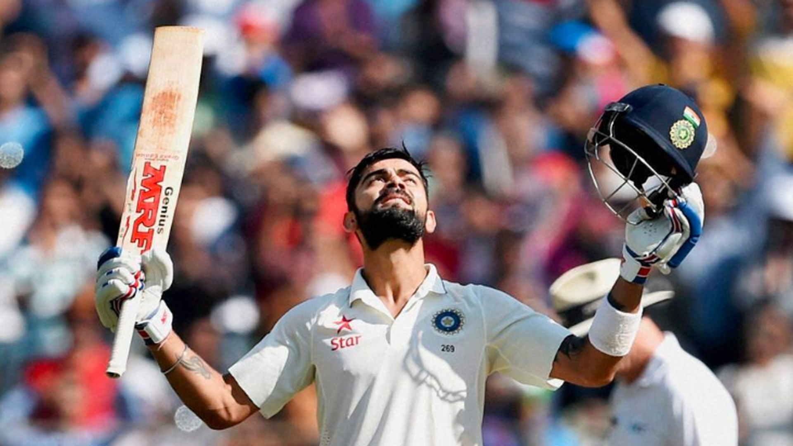

Fearless in Adelaide
Rather than settling for a draw, Kohli attacked Australia's bowlers in pursuit of victory. His aggressive approach won admiration around the cricketing world.[141 vs Australia (2014)]
Watch Here!Conquering England
Kohli answered years of criticism with a brilliant century in difficult English conditions. It was an innings built on determination and world-class technique.[149 vs England (2018)]
Watch Here!
A Lone Warrior's Battle
he shows that on a difficult pitch against a world-class attack, Kohli stood tall while wickets fell around him. It remains one of his finest overseas Test innings.[153 vs South Africa (2018)]
Watch Here!
The Double-Century
he's 235 was a masterclass in concentration, patience, and endurance. The innings helped India dominate England and showcased his growth as a Test batter.[235 vs England (2016)]
Watch Here!